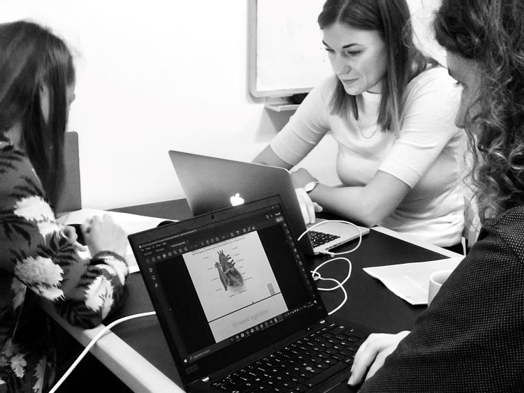

Duration: 4 months
Skills used: Planning, hosting & facilitating workshops, prototyping, user testing
During my internship at the Institute for Public Health I worked on several projects where I had the chance to use some of the UX methodologies that I had learnt studying digital design. From my internship, I will be highlighting three projects I worked on: Healthd360, Digital Learning Material and the conference “Knowledge for Change”.
HealthD360 aimed to combine health data from Danish citizens’ phones and wearables with health data available from the Danish public health system. I worked on a work package that was focused on improving mental health for children and young adults. Here I helped plan and conduct a workshop with teachers, ppr psychologists and social worker to gain insights about their issues with helping children with poor mental health.
How can we use digital tools to improve the mental health of young children?
This specific workshop was looking into how data could help students with low attendance in school. The workshop was divided into two parts. During the first part the participants discussed the reasons for low attendance. The insights were as follows:
Lack of social or educational resources for the child
Problems in the home causing despair for the child
Undiscovered diagnoses
Loneliness and isolation
Too many demands of the child
The second part of the workshop mixed the groups up and gave them the assignment to discuss potential solutions based on their previous discussions. Some of the insights that could be incorporated into the HealthD360 project were:
Sharing of data on attendance between teachers and school nurses to increase collaboration
Data about sleep and activity might be able to help with mental health
Adaptive algorithms to set the right goals for children (in terms of scale)
Counting tags on social media in order to pin point children who might be socially isolated
A system that allows children to report their mood when entering class (like red, yellow and green buttons)
The insight was used for a later workshop in Hammel that focused on ideation of digital concepts.
During my internship, I got the chance to take the lead with a colleague on creating a prototype for a digital learning material. This was supposed to improve the learning experience for new students by incorporating multiple ways of gathering information and by attaching assignments that activated the students when they had to read a subject matter.
How can we improve the learning experience of students just entering university?
We hosted an initial workshop with students who had volunteered to help us with the project. This workshop focused on which resources the students used and preferred to use. The workshop was divided into three parts:
Current sources of information
Where would I like to find information
Ideas for the digital learning material
After the workshop we decided that the digital learning material, should be built as an interactive pdf. Drawing upon insights gained from the workshop we thought this medium made sense. There were a couple of reasons for this:
The students used video a lot as a supplement to the texts they were told to read. Because of this we decided to make small videos of 2-5 minutes duration each week talking with the professor who was an expert on the subject the students were going to study that week. These videos were linked to from the digital learning material.
Student used websites to understand the meaning of technical terms or Latin words. The interactive pdf would let us create hover functions for these types of words meaning that the students wouldn’t have to interrupt their reading flow to look up words on the internet.
The students found cases important for knowledge to grow roots. Therefore, we added a case assignment for each week’s subject and a link in the digital learning material to a website where the students had to upload their answers.
We then invited the volunteer back to test our prototype and give us feedback on it. In general the students liked all the features, but had some critiques of the information architecture.
I helped a PhD. student plan and host a conference with scientist, social workers, fund representatives and clinicians about vulnerable families. I helped shape the format of the conference and helped document and facilitate the workshops that was conducted half-way through the conference.
Efforts should be made on the family’s premises
Relation between family and the helper is important (too often vulnerable families are thrown between different social workers and psychologist which means they have to build trust over and over again)
Any effort should be led and coordinated by few and should be carried out by the same people throughout the procedure
The approach and communication should be characterized by positivity, recognition and empathy
Efforts should be interdisciplinary (currently the different disciplines are competing for funding)
Physical frameworks should be established to create social networks between vulnerable families
Current and future initiatives need to be evaluated and the experiences should be passed on